Before drawing a hypercube, consider how to draw a cube.
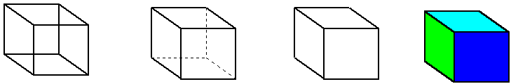
A cube is made up of six squares. Only two will be parallel to the xy axis. The other four would have to be imagined by two-dimensional people. Similarly, a hypercube is made up of eight cubes. Only two are parallel to the xyz space. The other six must be imagined by three-dimensional people.
Let's draw the cube by first drawing two squares. Lets label each point in each square with a number from 1 to 4.
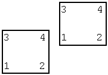
Now connect each point in one square with the corresponding point in the other square.
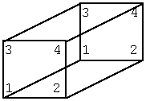
Now you have a cube -- well, not exactly since the edges are not all equal. But it's easier to draw some of the edges elongated. So I'll do the same with the hypercube, thus I'll really draw a hyper rectangular prism. A hypercube looks almost the same, but its harder to see all the (3D) sides at once.
A line is the area between two terminal points. A square is the area between to parallel lines. A cube is the area between two parallel squares. A hypercube is the area between two parallel cubes. So let's draw two parallel cubes and label the points o n each cube.
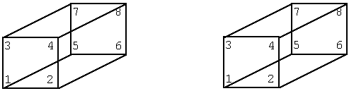
When we render a cube on a two-dimensional surface, we don't put the two parallel squares exactly parallel. We move one slightly up to provide prospective. For the same reason, let's move one of the cubes slightly up.
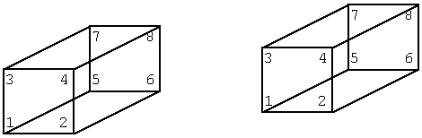
Now let's connect the corresponding points in the two cubes.
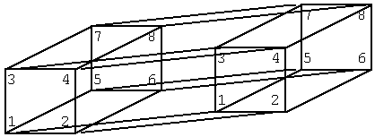
These are all the edges in the hypercube. But it's too hard to visualize in black and white. So let's go back to the cubes. This time let's add color. A cube can be draw as four squares. Let's make each square a different color.
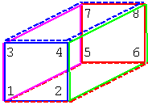
You may have noticed that I've drawn each of the 12 edges twice. The edges that are part of more than two squares, I've drawn in both in both colors so that it is easy to see each square. However, they are the same edge.
The sides of the cube are:
front back left right top (dashed) bottom (dashed)
Now let's draw the two cubes in different colors.
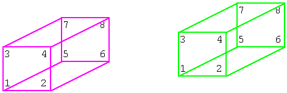
In the hypercube, there will be eight sides:
front back left right top (dashed) bottom (dashed) x (dashed) y (dashed)
I call the two new sides x and y for lack of a better name. Let's add the front and back sides of the hypercube. Remember that each side of a hypercube is a cube.
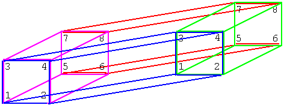
The magenta cube is parallel to the green cube. Both the magenta cube and the green cube are perpendicular to the blue cube. Yet, the blue cube shares one square face with the magenta cube and another square face with the green cube. In three dimensions, this would be an optical illusion, but in four dimensions it is a perfectly valid form.
Remember that the front square of the magenta cube is just as close to us as the front square of the green cube. The blue cube is not tilted. It is parallel to the fourth axis.
Now I've already drawn every edge in the hypercube -- some of them twice. However, I've only show four of the cubic faces of the hypercube. You might have noticed that there is no top or bottom. Let's add the top now.
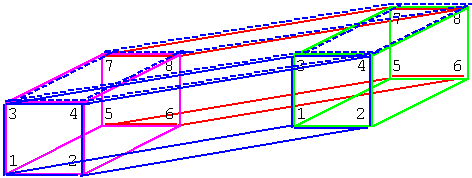
The top side of the hypercube does not appear to be a cube. However, it is. Unfortunately, we are rendering the hypercube in two dimensions. The top side goes through the fourth axis like the front side, but the top side is parallel to the front side. Since we rendered the front side in a "nice" way, we're forced to render the top side in a "not so nice" way. The top side looks like a cube whose faces fell down to the left. However, this configuration allows the top side of the hypercube to be covered. The bottom side can be rendered in a similar fashion.
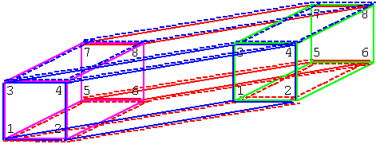
We still have to show side x and side y. These two sides will appear even more weird than the top and bottom sides. Cubic side x will connect the left square side of the magenta cube with the left square side of the green cube. Likewise, cubic side y will connect the right square side of magenta cube with the right square side of the green cube. To make these two cubic sides easy to see, let's draw only the left, right , FONT>x (dashed), and y (dashed) sides of the hypercube.
Here's side x.
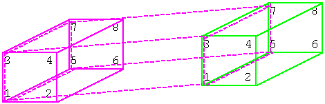
Here's both side x and side y.
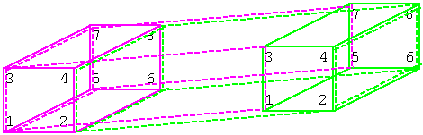
Finally, here's the hypercube in all of its glory.
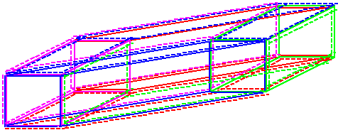
That's eight cubes, twenty squares, thirty two edges, and sixteen terminal points. Here it is again with the redundant rendering of edges removed. Can you still see all eight cubes?
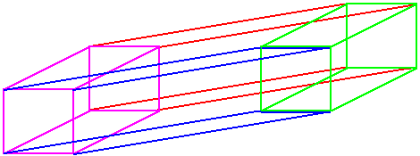
Well, to be a true hypercube, all edges would have to be the same length. For clarity, I discarded this fact. But the true hypercube would actually look like this.
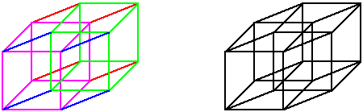
Let's find the eight cubes in the hypercube.
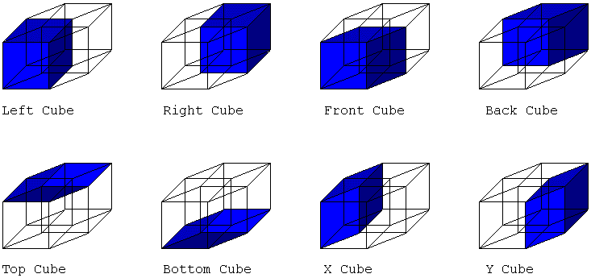
If we wanted to, we could try drawing a hyper-hypercube, a five dimensional figure. However, rendering a five dimensional figure in two dimensions is very messy. It would be better to render a hyper-hypercube in three dimensions.